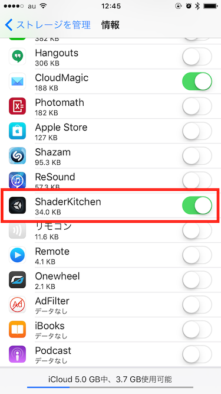
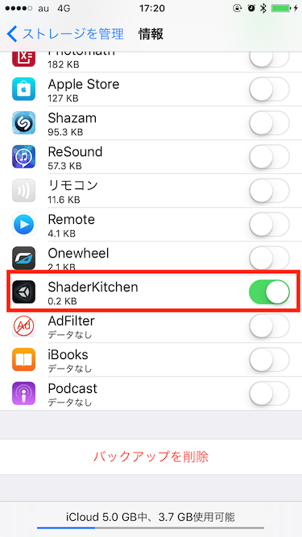

Unity5.3.2p2~3でAssetBundleがiCloudに入っちゃう暫定対策
概要
このバージョンだけかどうかはわかんねーけどまとめる。
ただ、検証方法がAppleの作ったGUIごしのものなのでリアルタイム性がすこし怪しく、鵜呑みにせず信じるために疑ってかかってほしい。
症状
iOS用にAssetBundleビルドしてWWW.LoadCacheOrDownload で取得するとなんとデータがiCloudに載る
具体的には、こうなる。

親にむかってなんだそのデータは！！！
取得したAssetBundleが見事にiCloudに載っとる。これは死ぬぞ。
原因と解決法
AssetBundleをDLしたあと、iOSのアプリケーションキャッシュ内に保存する際のフラグ設定をおこなう内部APIがあったんだけど、
その設定値がAssetBundle DL時 のみおかしかった。
Xcodeでのビルド時に、以下のファイルの関数を使っている。
Filesystem.mm
extern "C" int UnityUpdateNoBackupFlag(const char* path, int setFlag)
{
int result;
if(setFlag)
{
u_int8_t b = 1;
result = ::setxattr(path, "com.apple.MobileBackup", &b, 1, 0, 0);
}
else
{
result = ::removexattr(path, "com.apple.MobileBackup", 0);
}
return result == 0 ? 1 : 0;
}
で、このsetFlag、AssetBundleの保存以外にもいろいろな所からつかっているみたいなんだけど、
AssetBundleを保存するタイミングのやつだけ、setFlag = 0 (Excludeしない)という感じで来てた。
Unity Japanに問い合わせたところめっちゃ早く返答がもらえて、「現状使用している方法が古いので、最新でこんなのどう？」っていうコードサンプルをもらった。
で、
最終的に、関数を次のように書き換えると救われる。
とりあえずUnityでゲームつくっててiCloudの世話になることは無いので(暴言)
固定値でexclude = YESを叩きつける。
extern "C" int UnityUpdateNoBackupFlag(const char* path, int setFlag)
{
NSLog(@"path:%s, setFlag:%d", path, setFlag);
int FIXED_YES_NUM = 1;
return [[NSURL fileURLWithPath:[NSString stringWithUTF8String:path]] setResourceValue:[NSNumber numberWithBool:FIXED_YES_NUM] forKey:NSURLIsExcludedFromBackupKey error: nil] != NO;
}
一応貼っておくと実行時のログは次のような感じ。
2016-02-19 17:11:39.513 ProductName[595:201891] path:/var/mobile/Containers/Data/Application/7D89FD21-A2D1-42B6-AE4C-F5559366E4B9/Library/UnityCache/Temp/f34e32a1dd7804da1921ba641bbdffb9, setFlag:1
2016-02-19 17:11:39.521 ProductName[595:201773] path:/var/mobile/Containers/Data/Application/7D89FD21-A2D1-42B6-AE4C-F5559366E4B9/Library/UnityCache/Temp/f34e32a1dd7804da1921ba641bbdffb9/__info, setFlag:1
2016-02-19 17:11:39.522 ProductName[595:201773] path:/var/mobile/Containers/Data/Application/7D89FD21-A2D1-42B6-AE4C-F5559366E4B9/Library/UnityCache/Shared/e540cdd1328b2b21e29a95405c301b9313b7c346, setFlag:0
2016-02-19 17:11:39.522 ProductName[595:201773] path:/var/mobile/Containers/Data/Application/7D89FD21-A2D1-42B6-AE4C-F5559366E4B9/Library/UnityCache/Temp/f34e32a1dd7804da1921ba641bbdffb9/__data, setFlag:1
2016-02-19 17:11:39.526 ProductName[595:201865] path:/var/mobile/Containers/Data/Application/7D89FD21-A2D1-42B6-AE4C-F5559366E4B9/Library/UnityCache/Shared/e540cdd1328b2b21e29a95405c301b9313b7c346/__info, setFlag:1
setFlag = 0で来てるのが、AssetBundleの保存。
どっかで逆転か初期値か初期値が入ってないか、な気がする。
Unityへは報告ずみ。
結果
Victory~~~~!!

追記
自分でも確認したい人向けに下記を用意した。
再現サンプルリポジトリ
https://github.com/sassembla/ShaderKitchen/tree/assetbundle_debug_sorasu
プロジェクトを、ツールバーの Unidon > Publish Site からビルドできる。
ビルド時に、Assetsフォルダと同じ階層に、UnidonWeb/AssetBundle というフォルダ+アセットバンドルが作成されるようになっている。
実機で動かす際は適当なCDNとかにそれらをアップ、DLするURLを書き換えてみてほしい。
アプリケーション実行時、実行時に自動的に１つのAssetBundleを取得しキャッシュしている。
キャッシュにはWWW.LoacFromCacheOrDownload を使っている。
現在までUnity5.3.2系で確認した結果おかしい感じなので、ほかのバージョンでも動かしたりしてみてほしい。
誰か。